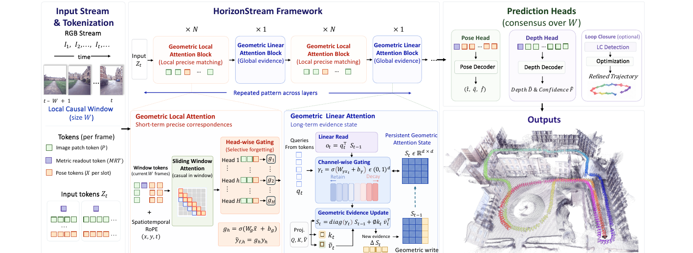

Learns from 48-frame clips and generalizes to 10K+ frame streams.
HorizonStream Long-Horizon Attention for Streaming 3D Reconstruction
1HKUST(GZ)
2Horizon Robotics
3CASIA
4CSU
Camera Pose
Depth
48 → 10K+
Online causal
Linear time
Constant memory
Abstract
Stable 3D streaming beyond 10K frames, without reset.
Online 3D reconstruction must estimate camera pose and scene geometry under strict causal and bounded-memory constraints. Existing streaming methods often drift, jitter, or collapse on long sequences because they organize history purely by recency, while geometric evidence has heterogeneous lifetimes.
HorizonStream formalizes geometric propagation as an evidence influence kernel and factorizes it into long-range temporal propagation, short-range spatial matching, and metric readout. Geometric Linear Attention learns channel-wise decay rates for bounded multi-timescale memory, Geometric Local Attention performs reliable local 3D matching, and Metric Readout Tokens recover stable scale and rigid pose from the persistent geometric state.
Processes video causally with linear time and constant memory.
Maintains recurrent geometry without accuracy degradation.
Comparison
Qualitative comparison.
Method
Gated geometric propagation.

Geometric Linear Attention
Learns channel-wise gates to retain persistent geometry and discount stale evidence across windows.
Geometric Local Attention
Uses head-wise gates and spatiotemporal RoPE to suppress attention sinks and prevent stale evidence from saturating the recurrent state.
MRT + relative pose fusion
Reads scale and pose from high-retention geometric channels to prevent long-horizon degradation.
Results
Lower ATE on long-horizon sequences
KITTI mean ATE ↓
VBR ATE ↓
Citation
BibTeX
@misc{cheng2026horizonstreamlonghorizonattentionstreaming,
title = {HorizonStream: Long-Horizon Attention for Streaming 3D Reconstruction},
author = {Chong Cheng and Peilin Tao and Nanjie Yao and Guanzhi Ding and Xianda Chen and Yuansen Du and Xiaoyang Guo and Wei Yin and Weiqiang Ren and Qian Zhang and Zhengqing Chen and Hao Wang},
year = {2026},
eprint = {2605.23889},
archivePrefix = {arXiv},
primaryClass = {cs.CV},
url = {https://arxiv.org/abs/2605.23889}
}